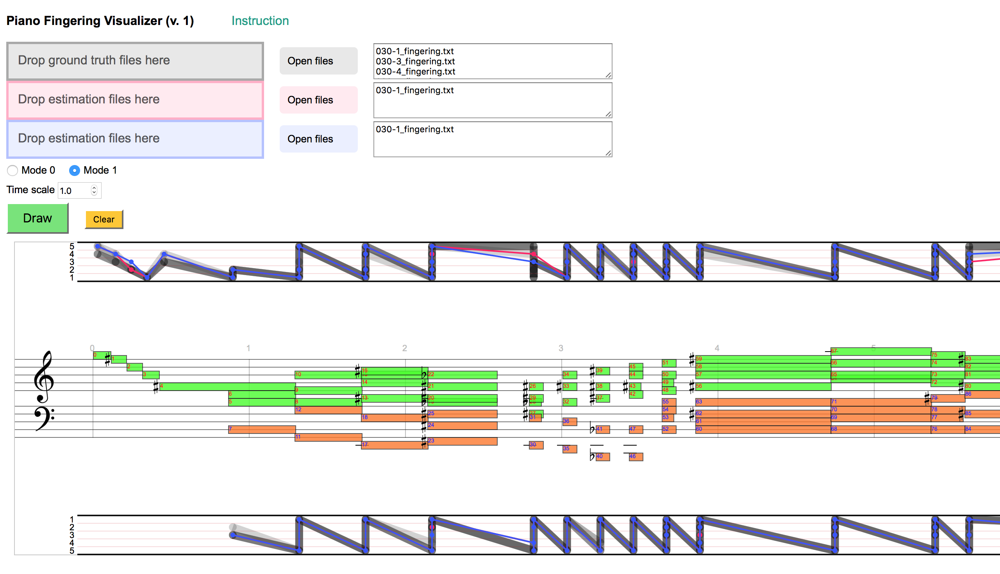

Piano Fingering Visualizer accepts the fingering file format used for Piano Fingering Dataset. To get access to the dataset and see details of the data format, please visit the webpage.With Piano Fingering Visualizer, you can observe and compare fingering files. You can simply drag and drop fingering files to the coloured areas, or click the “Open files” buttons to select fingering files. The names of the selected files will appear in the text boxes on the right.
To visualize, click the “Draw” button.
Fingerings imported to the gray area will appear with gray half-transparent lines. Fingerings imported to the red and blue areas will appear in the corresponding colour. Representations of fingerings will be superposed. The gray fingerings appear in the back, the red one next, and the blue one on the front.
There are two modes of representation. You can change the mode by clicking the radio buttoms. To change the horizontal scale, change the value of “Time scale”.